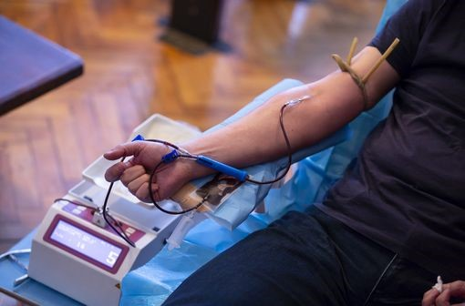

|
édition du 21 Janvier 2022 |

 |
Don du sang : nouveaux critères de sélection des donneursSanté PubliqueLes critères de sélection des donneurs de sang sont actualisés. Dans cette nouvelle version qui entrera en vigueur le 16 mars 2022, la référence à l'orientation sexuelle du candidat au don est supprimée.... Lire la suite |
Vaccins ARNm COVID-19 : pas d'augmentation du risque d'accident cardiovasculaire chez les 18-74 ansSanté Publique - COVID-19Selon une nouvelle étude pharmaco-épidémiologique réalisée par le groupement d'intérêt scientifique EPI-PHARE, les vaccins ARNm n'exposent pas à un risque accru d'événements cardiovasculaires (infarctus, embolie pulmonaire, AVC) chez les personnes... Lire la suite |